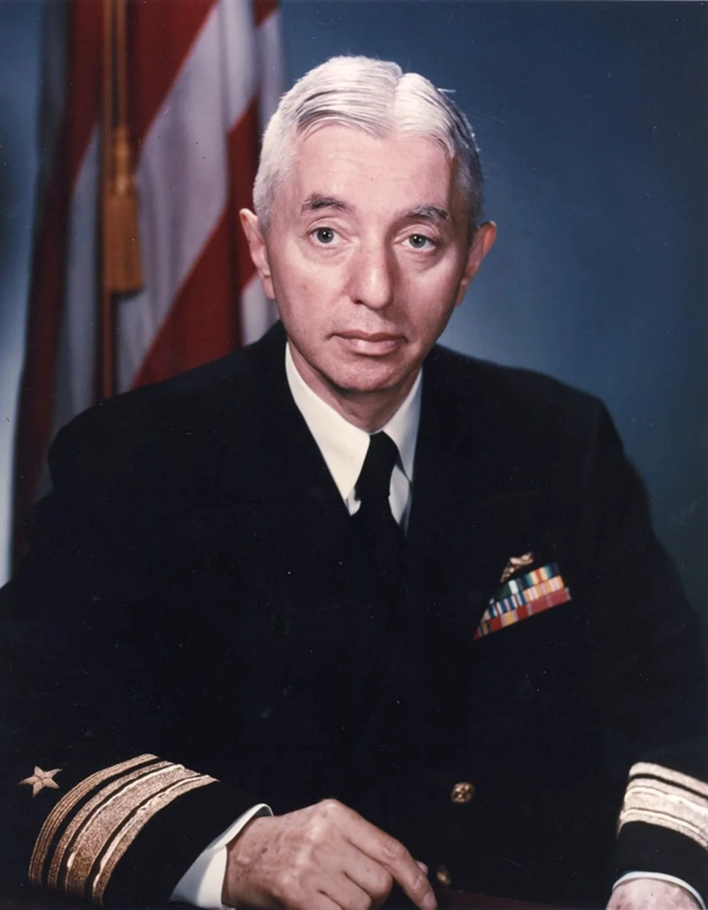
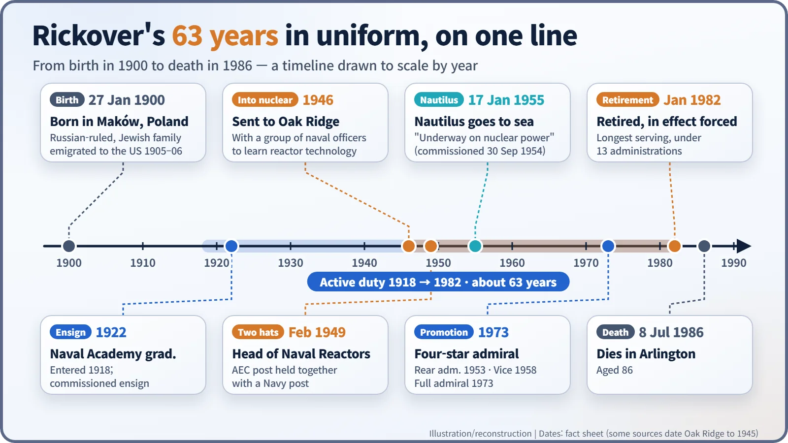
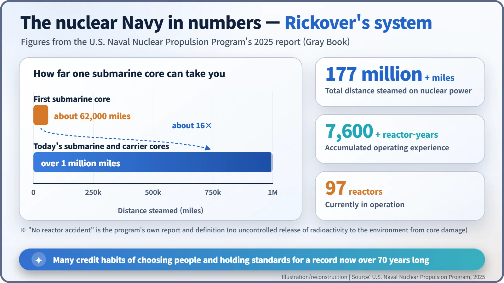
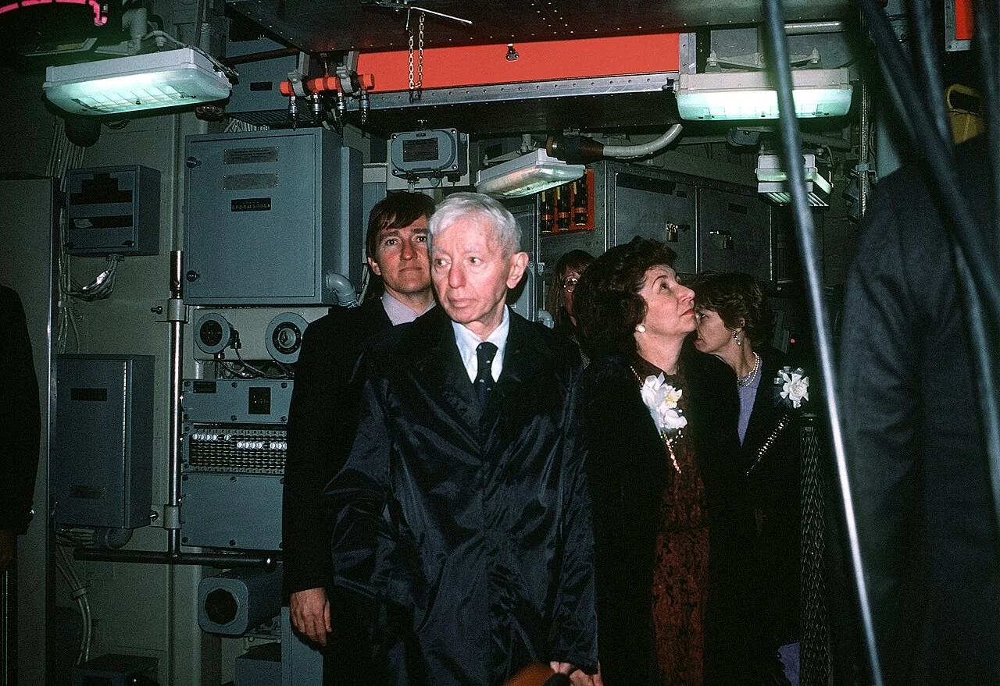

Nuclear History · 151
"Why Not?" — Admiral Rickover and the Culture of the Nuclear Navy
A blunt interview question to a young Jimmy Carter sums up the standards one engineer-admiral set for the people who run naval reactors.
Hyman G. Rickover (1900–1986), an immigrant tailor's son turned naval electrical engineer, built the U.S. nuclear Navy and, just as importantly, its culture. He personally interviewed every officer who wanted to run its reactors, demanded total personal responsibility, and served 63 years on active duty before being pushed into retirement in 1982.
"Why not?"
"Did you do your best?" The young naval officer Jimmy Carter (1924–2024) started to say "Yes, sir," then stopped. "No, sir, I didn't always do my best," he admitted. The thin, sharp-eyed captain across the desk looked at him for a long moment and asked one last question: "Why not?"
That was Carter's interview, around 1952, for the Navy's new nuclear submarine program, as he later told it himself. More than twenty years on, running for president, Carter took the title of his campaign autobiography from that question: Why Not the Best? (1975). The man who asked it was Hyman George Rickover (1900–1986), the officer often called the father of the nuclear Navy. [3] [1]

A tailor's son becomes an electrical engineer
Rickover was born on 27 January 1900 in Maków Mazowiecki, a town in Russian-ruled Poland, into a Jewish family. Around 1905–1906 (sources differ by a year) the family fled persecution for the United States and settled in Chicago, where his father worked as a tailor.
He entered the U.S. Naval Academy in 1918 and graduated in 1922. After service in destroyers, a battleship and submarines, he was selected in 1937 as an engineering-duty officer, and during the Second World War he worked on ships' electrical equipment at the Navy's Bureau of Ships. He was less a dashing captain than a meticulous engineer. [1]
A second career begins at Oak Ridge
In 1946 Rickover was sent with a small group of naval officers to the laboratory at Oak Ridge, Tennessee, to learn about reactors (one Navy history article dates his assignment to June 1945). He became convinced that a reactor, which produces heat for years without needing air, could turn the submarine into a ship that never had to surface.
From February 1949 he held two jobs at once: head of naval reactors at the civilian Atomic Energy Commission and head of the corresponding branch in the Navy. That "two hats" arrangement put design, testing and operator training in one pair of hands. The result was the signal sent by USS Nautilus on 17 January 1955: "Underway on nuclear power." [1]

The interview room as a safety school
Many historians argue that Rickover's real legacy lies less in machines than in how he chose people. He personally interviewed every officer candidate who applied for nuclear training. The questions were deliberately rough: he wanted to see who stayed calm under pressure and who would admit what they did not know.
One famous story says he sawed a few inches off the front legs of the interview chair so that candidates kept sliding forward. A U.S. Navy history article repeats it, but it rests on the recollections of people who sat the interviews, so it is best treated as a story often told rather than an established fact. [1]
What he stressed above all was responsibility. Testifying to Congress's Joint Committee on Atomic Energy in 1961, he said: "Responsibility is a unique concept… If responsibility is rightfully yours, no evasion, or ignorance or passing the blame can shift the burden to someone else." Dig into the technology until you truly understand it; never bargain away a standard; report bad news quickly and honestly. Those habits became the culture of the naval nuclear organization. [1]
A culture you can count
The results show up in numbers. According to the U.S. Naval Nuclear Propulsion Program's 2025 report, its ships have steamed more than 177 million miles on nuclear power and accumulated more than 7,600 reactor-years of operation (one reactor running for one year counts as one reactor-year); 97 reactors are in service. The first submarine core lasted about 62,000 miles; today's cores last more than a million. The program reports that it has never had a reactor accident, meaning core damage that released radioactivity into the environment. [2]
Two caveats belong here. That record is the program's own report, using its own definition. And crediting it to one man alone would be too simple: laboratories, shipyards and generations of successors built it too.

The shadow of stubbornness, and the exit
His stubbornness had a cost. He clashed constantly with shipyards and Navy officials, and his near-insulting interviews drew criticism for decades. After his retirement, gifts he had accepted over 16 years from the shipbuilder General Dynamics, valued by a Navy review board at $67,628, earned him a non-punitive letter of admonishment from the Secretary of the Navy.
Rickover became a rear admiral in 1953, a vice admiral in 1958 and a four-star admiral in 1973. In January 1982, under Navy Secretary John F. Lehman Jr. in the Reagan administration, he was in effect forced to retire. He had served on active duty since 1918, about 63 years under 13 administrations, the longest of anyone in U.S. military history. Shortly afterwards he startled Congress by calling nuclear power a "necessary evil" and saying that, if it were up to him, he would sink all the nuclear ships. [1] [5]

Rickover died at home in Arlington, Virginia, on 8 July 1986, aged 86. His lesson still stands: reactor safety starts before the steel, with people who keep asking themselves, "Why not the best?"